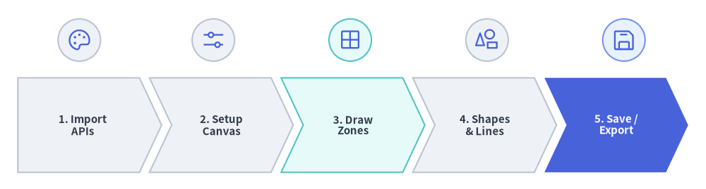
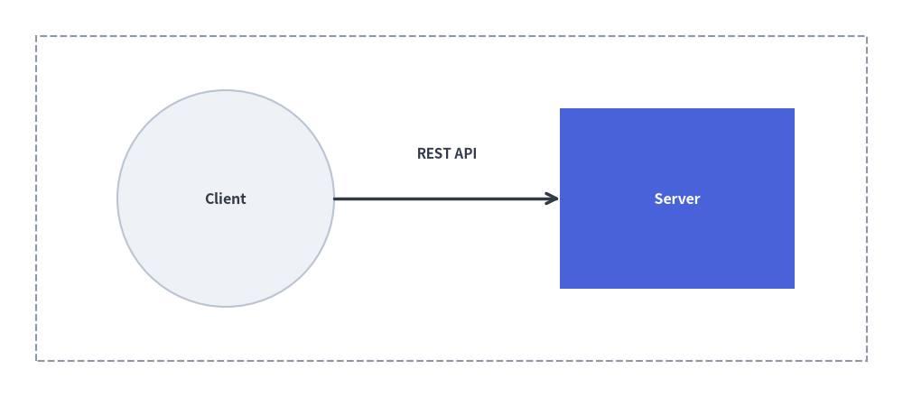

Quick Start Guide
Drawlib makes creating publication-ready technical diagrams intuitive and reproducible—whether authored as standalone Python scripts (.py) or embedded Markdown blocks (```drawlib). Every illustration follows a predictable 5-step lifecycle:

Source Code
from __future__ import annotations
from drawlib.anim import Animation
from drawlib.canvas import save, setup
from drawlib.icons import code as code_icons
from drawlib.icons import phosphor
from drawlib.lines import line
from drawlib.shapes import circle, rectangle
from drawlib.smartarts import SourceCode, SourceCodeStyles
from drawlib.styles import Styles
from drawlib.text import text
W, H = 138.0, 82.0
setup(width=W, height=H)
anim = Animation(fps=10.0, loop=0)
# Typography & container styles
CODE_TEXT_SIZE = 10.0
PT_TO_CANVAS = W / 720.0
FONT_CANVAS = CODE_TEXT_SIZE * PT_TO_CANVAS
LINE_H = FONT_CANVAS * 1.8
PAD_Y = FONT_CANVAS * 1.2
CODE_STYLES = SourceCodeStyles.get("default", font_lang="en", text_size=CODE_TEXT_SIZE).patch(
box_style=Styles.Neutral.patch(shape_fill_color=(0, 0, 0, 0), shape_line_width=0),
)
PANE_HEADER = Styles.Neutral.patch(
shape_fill_color=(238, 243, 250),
shape_line_color=(203, 213, 225),
shape_line_width=1.2,
shape_r=0.0,
)
EDITOR_BODY = Styles.Neutral.patch(
shape_fill_color=(250, 252, 255),
shape_line_color=(203, 213, 225),
shape_line_width=1.2,
shape_r=0.0,
)
STUDIO_BODY = Styles.Neutral.patch(
shape_fill_color=(240, 244, 250),
shape_line_color=(203, 213, 225),
shape_line_width=1.2,
shape_r=0.0,
)
CODE_CHUNKS = [
# Step 1 (lines 0..4)
[
"from drawlib.canvas import save, setup",
"from drawlib.lines import line",
"from drawlib.shapes import circle, rectangle",
"from drawlib.styles import Styles",
"from drawlib.text import text",
],
# Step 2 (line 5)
[
"setup(width=100, height=44)",
],
# Step 3 (lines 6..7) - Optional
[
"# Optional: boundary zone",
"rectangle((50, 22), 92, 36, style=Styles.MutedDashed)",
],
# Step 4 (lines 8..14)
[
"circle((25, 22), 12,",
' style=Styles.Neutral, text="Client")',
"rectangle((75, 22), 26, 20,",
' style=Styles.PrimaryFlat, text="Server")',
"line((37, 22), (62, 22),",
' arrow_head="->", style=Styles.DarkBold)',
'text((49.5, 27), "REST API", style=Styles.DarkBold)',
],
# Step 5 (line 15)
[
"save()",
],
]
STEP_TITLES = [
("1. Import APIs", ""),
("2. Setup Canvas", ""),
("3. Draw Zones", "(Optional)"),
("4. Shapes & Lines", ""),
("5. Save / Export", ""),
]
def draw_step_bar(active_step: int) -> None:
"""Draw top 5-step progress indicator bar (active_step is 1..5)."""
pill_w = 24.4
gap = 2.0
start_x = 4.0 + pill_w / 2.0
cy = 75.2
pill_h = 7.6
for idx, (label, sublabel) in enumerate(STEP_TITLES, start=1):
cx = start_x + (idx - 1) * (pill_w + gap)
is_optional = bool(sublabel)
if idx > 1:
prev_cx = cx - (pill_w + gap)
line(
(prev_cx + pill_w / 2.0 + 0.2, cy),
(cx - pill_w / 2.0 - 0.2, cy),
style=Styles.PrimaryBold if idx <= active_step else Styles.MutedThin,
)
if idx == active_step:
st = Styles.PrimaryFlat.patch(shape_r=1.4)
tst = Styles.WhiteBold.patch(text_size=10.2)
sub_tst = Styles.White.patch(text_size=9.5)
elif idx < active_step:
st = Styles.PrimaryNeutral.patch(
shape_r=1.4,
shape_line_width=1.1,
shape_line_style="dashed" if is_optional else "solid",
)
tst = Styles.PrimaryBold.patch(text_size=10.2)
sub_tst = Styles.Primary.patch(text_size=9.5)
else:
st = Styles.Neutral.patch(
shape_r=1.4,
shape_line_width=1.1,
shape_line_style="dashed" if is_optional else "solid",
)
tst = Styles.MutedBold.patch(text_size=10.2)
sub_tst = Styles.Muted.patch(text_size=9.5)
if is_optional:
rectangle((cx, cy), width=pill_w, height=pill_h, style=st)
text((cx, cy + 1.35), label, style=tst)
text((cx, cy - 1.55), sublabel, style=sub_tst)
else:
rectangle((cx, cy), width=pill_w, height=pill_h, style=st, text=label, text_style=tst)
def draw_code_pane(active_step: int, *, sub_step_4_only_shapes: bool = False) -> None:
"""Draw left Python editor pane with active-step highlight and syntax highlighting."""
x0, w = 4.0, 68.5
cx = x0 + w / 2.0
top_y = 63.2
body_h = 59.8
header_h = 5.4
# Header bar (y = 63.2 .. 68.6)
rectangle((cx, top_y + header_h / 2.0), width=w, height=header_h, style=PANE_HEADER)
code_icons.python((x0 + 3.6, top_y + header_h / 2.0), width=3.4, style=Styles.Neutral)
text(
(x0 + 6.4, top_y + header_h / 2.0),
"client_server.py",
style=Styles.DarkBold.patch(text_size=10.2, halign="left"),
)
# Fixed-height editor body (y = 3.4 .. 63.2)
rectangle((cx, top_y - body_h / 2.0), width=w, height=body_h, style=EDITOR_BODY)
# Assemble visible lines up to active_step
lines_so_far: list[str] = []
active_start = 0
for s_idx in range(active_step):
chunk = CODE_CHUNKS[s_idx]
if s_idx == 3 and sub_step_4_only_shapes:
chunk = chunk[:4]
if s_idx == active_step - 1:
active_start = len(lines_so_far)
if s_idx == 3 and not sub_step_4_only_shapes:
active_start += 4
lines_so_far.extend(chunk)
active_end = len(lines_so_far) - 1
# Highlight band behind newly added lines
hl_top = top_y - PAD_Y - active_start * LINE_H
hl_bot = top_y - PAD_Y - (active_end + 1) * LINE_H
hl_cy = (hl_top + hl_bot) / 2.0
hl_h = hl_top - hl_bot
rectangle(
(cx, hl_cy),
width=w - 0.6,
height=hl_h,
style=Styles.Neutral.patch(shape_fill_color=(229, 239, 255), shape_line_width=0),
)
rectangle(
(x0 + 0.55, hl_cy),
width=0.9,
height=hl_h,
style=Styles.PrimaryFlat.patch(shape_line_width=0),
)
SourceCode.draw(
xy=(x0, top_y),
width=w,
code="\n".join(lines_so_far),
styles=CODE_STYLES,
code_lang="python",
show_linenum=True,
align="top_left",
)
def draw_preview_pane(active_step: int, *, sub_step_4_only_shapes: bool = False) -> None:
"""Draw right live canvas preview pane across Steps 1..5."""
x0, w = 75.5, 58.5
cx = x0 + w / 2.0
top_y = 63.2
body_h = 59.8
header_h = 5.4
# Header bar
rectangle((cx, top_y + header_h / 2.0), width=w, height=header_h, style=PANE_HEADER)
phosphor.monitor((x0 + 3.6, top_y + header_h / 2.0), width=3.4, style=Styles.Primary)
text(
(x0 + 6.4, top_y + header_h / 2.0),
"Canvas Output",
style=Styles.DarkBold.patch(text_size=10.2, halign="left"),
)
# Studio grey workspace
body_cy = top_y - body_h / 2.0
rectangle((cx, body_cy), width=w, height=body_h, style=STUDIO_BODY)
if active_step == 1:
# Before setup(): no canvas exists yet
phosphor.frame_corners((cx, body_cy + 3.0), width=6.5, style=Styles.Muted)
text(
(cx, body_cy - 3.2),
"Waiting for setup()...",
style=Styles.MutedBold.patch(text_size=10.5),
)
return
# Miniature 100 x 44 canvas mapped to 51.0 x 22.44 (scale = 0.51)
scale = 0.51
can_w = 100.0 * scale
can_h = 44.0 * scale
can_cx, can_cy = cx, body_cy + 4.2
can_x0 = can_cx - can_w / 2.0
can_y0 = can_cy - can_h / 2.0
# Step 2+: Blank white canvas sheet
rectangle(
(can_cx, can_cy),
width=can_w,
height=can_h,
style=Styles.Neutral.patch(
shape_fill_color=(255, 255, 255),
shape_line_color=(148, 163, 184),
shape_line_width=1.3,
),
)
if active_step < 5:
text(
(can_cx, can_y0 - 3.6),
"Canvas (100 × 44)",
style=Styles.MutedBold.patch(text_size=10.0),
)
# Step 3+: Boundary dashed container (Optional)
if active_step >= 3:
rectangle(
(can_x0 + 50.0 * scale, can_y0 + 22.0 * scale),
width=92.0 * scale,
height=36.0 * scale,
style=Styles.MutedDashed.patch(shape_line_width=1.2),
)
# Step 4+: Entities, Connector & Label
if active_step >= 4:
circle(
(can_x0 + 25.0 * scale, can_y0 + 22.0 * scale),
radius=12.0 * scale,
style=Styles.Neutral,
text="Client",
text_style=Styles.DarkBold.patch(text_size=10.2),
)
rectangle(
(can_x0 + 75.0 * scale, can_y0 + 22.0 * scale),
width=26.0 * scale,
height=20.0 * scale,
style=Styles.PrimaryFlat,
text="Server",
text_style=Styles.WhiteBold.patch(text_size=10.2),
)
if not sub_step_4_only_shapes:
line(
(can_x0 + 37.0 * scale, can_y0 + 22.0 * scale),
(can_x0 + 62.0 * scale, can_y0 + 22.0 * scale),
arrow_head="->",
style=Styles.DarkBold.patch(line_width=1.4),
)
text(
(can_x0 + 49.5 * scale, can_y0 + 28.5 * scale),
"REST API",
style=Styles.DarkBold.patch(text_size=9.8),
)
# Step 5: Save / Download overlay badge overlapping lower canvas edge
if active_step == 5:
card_w, card_h = 39.5, 11.8
card_cy = can_y0 - 1.2
rectangle(
(can_cx, card_cy),
width=card_w,
height=card_h,
style=Styles.Neutral.patch(
shape_fill_color=(255, 255, 255, 0.97),
shape_line_color=(59, 102, 212),
shape_line_width=1.6,
shape_r=1.8,
),
)
circle(
(can_cx - 13.0, card_cy),
radius=3.5,
style=Styles.PrimaryFlat,
)
phosphor.download_simple((can_cx - 13.0, card_cy), width=4.1, style=Styles.White)
text(
(can_cx - 7.5, card_cy + 1.9),
"client_server.png",
style=Styles.PrimaryBold.patch(text_size=10.8, halign="left"),
)
text(
(can_cx - 7.5, card_cy - 2.1),
"Saved via save()",
style=Styles.Dark.patch(text_size=10.0, halign="left"),
)
def render_step(step: int, *, sub_step_4_only_shapes: bool = False) -> None:
"""Render full split-screen frame for a given step."""
draw_step_bar(step)
draw_code_pane(step, sub_step_4_only_shapes=sub_step_4_only_shapes)
draw_preview_pane(step, sub_step_4_only_shapes=sub_step_4_only_shapes)
with anim.frame(duration=1.15):
render_step(1)
with anim.frame(duration=1.25):
render_step(2)
with anim.frame(duration=1.25):
render_step(3)
with anim.frame(duration=0.95):
render_step(4, sub_step_4_only_shapes=True)
with anim.frame(duration=1.40):
render_step(4, sub_step_4_only_shapes=False)
with anim.frame(duration=2.80):
render_step(5)
save()
- Import APIs: Import canvas management, drawing primitives, and styling presets.
- Setup Canvas: Initialize canvas dimensions (
width,height) viasetup(). - Draw Structural Zones (Optional): Create boundary boxes, cloud regions, or grouping containers when needed.
- Draw Entities & Connectors: Add shapes, icons, and lines with semantic styles and labels.
- Save / Export: Save the drawing to an image file via
save(), or let the Document Builder render it inline automatically.
1. Standalone Python Script (images Project)
[!IMPORTANT] Project-First Rule (
drawlib init):
Rather than creating bare.pyfiles in an uninitialized directory, always scaffold a Drawlib project first sostyles.py(theme & language fonts),utils.py,_assets/, andbuild.share properly configured:# Scaffold a standalone illustration project (creates images_src/ -> images/) $ uv run drawlib init images
Create a Python script named images_src/client_server.py:
from drawlib.canvas import save, setup
from drawlib.lines import line
from drawlib.shapes import circle, rectangle
from drawlib.styles import Styles
from drawlib.text import text
# Step 2: Setup canvas dimensions (Cartesian space: 100 wide x 44 high)
setup(width=100, height=44)
# Step 3 (Optional): Draw background boundary container
rectangle((50, 22), width=92, height=36, style=Styles.MutedDashed)
# Step 4: Draw main entities and connectors (50%+ Neutral-Grounded)
circle((25, 22), radius=12, style=Styles.Neutral, text="Client", text_style=Styles.DarkBold.patch(text_size=11.5))
rectangle((75, 22), width=26, height=20, style=Styles.PrimaryFlat, text="Server", text_style=Styles.WhiteBold.patch(text_size=11.5))
# Connection line with arrowhead
line((37, 22), (62, 22), arrow_head="->", style=Styles.DarkBold)
text((49.5, 27), "REST API", style=Styles.DarkBold.patch(text_size=11.0))
# Step 5: Save image (defaults to client_server.png)
save()
Running and Previewing
Build all scripts in images_src/ using the generated build script, or run a single script directly:
# Batch-compile all scripts in images_src/ to images/
$ ./images_src/build.sh
# Or run a single script directly with Python
$ uv run python images_src/client_server.py
Use the unified drawlib show CLI command to export headless previews or inspect coordinate overlays:
# Export directly to a specified output file
$ uv run drawlib show images_src/client_server.py -o .drawlib/scratch/output.png
# Overlay a visual coordinate grid (-g) to check element spacing
$ uv run drawlib show images_src/client_server.py -g -o .drawlib/scratch/output_grid.png
2. Embedded Markdown Document
Inside any Markdown document (such as doc.md in a doc or site project), simply embed the code block with drawlib:
# Architecture Overview
Here is our primary service flow:
```drawlib align=center file=client_server_communication.png caption="Client-Server REST Communication"
from drawlib.canvas import save, setup
from drawlib.shapes import rectangle, circle
from drawlib.lines import line
from drawlib.text import text
from drawlib.styles import Styles
setup(width=100, height=44)
rectangle((50, 22), width=92, height=36, style=Styles.MutedDashed)
circle((25, 22), radius=12, style=Styles.Neutral, text="Client", text_style=Styles.DarkBold.patch(text_size=11.5))
rectangle((75, 22), width=26, height=20, style=Styles.PrimaryFlat, text="Server", text_style=Styles.WhiteBold.patch(text_size=11.5))
line((37, 22), (62, 22), arrow_head="->", style=Styles.DarkBold)
text((49.5, 27), "REST API", style=Styles.DarkBold.patch(text_size=11.0))
save()
```
You can preview a specific named block inside a Markdown file with a coordinate grid before building the full site:
# Preview a specific named diagram block with a coordinate grid (-g)
$ uv run drawlib show doc.md client_server_communication.png -g -o .drawlib/scratch/preview.png
When compiled with drawlib build html or drawlib build markdown, the code fence is executed and replaced with the rendered image:

Source Code
from drawlib.canvas import save, setup
from drawlib.shapes import rectangle, circle
from drawlib.lines import line
from drawlib.text import text
from drawlib.styles import Styles
setup(width=100, height=44)
rectangle((50, 22), width=92, height=36, style=Styles.MutedDashed)
circle((25, 22), radius=12, style=Styles.Neutral, text="Client", text_style=Styles.DarkBold.patch(text_size=11.5))
rectangle((75, 22), width=26, height=20, style=Styles.PrimaryFlat, text="Server", text_style=Styles.WhiteBold.patch(text_size=11.5))
line((37, 22), (62, 22), arrow_head="->", style=Styles.DarkBold)
text((49.5, 27), "REST API", style=Styles.DarkBold.patch(text_size=11.0))
save()
3. Key Rules for Smooth Drawing
setup()is Mandatory: Always callsetup(width=..., height=...)at the start of your drawing block.- Handling
save()in Markdown Blocks: In Markdown embedded blocks, callingsave()is optional because Drawlib captures the canvas automatically (and calls tosave()are safely treated as no-ops). However, writingsave()(without arguments) in complete examples is recommended for 100% copy-paste compatibility with standalone.pyscripts. - Color Discipline (50%+ Neutral-Grounded Architecture): Avoid rainbow chaos. Ground 50% or more of nodes in calm neutral cards (
Styles.Neutral,Styles.PrimaryNeutral,Styles.SecondaryNeutral), reserve saturated hero styles (Styles.PrimaryFlat) for 1–2 primary focal points, and useStyles.DarkBoldfor connectors.